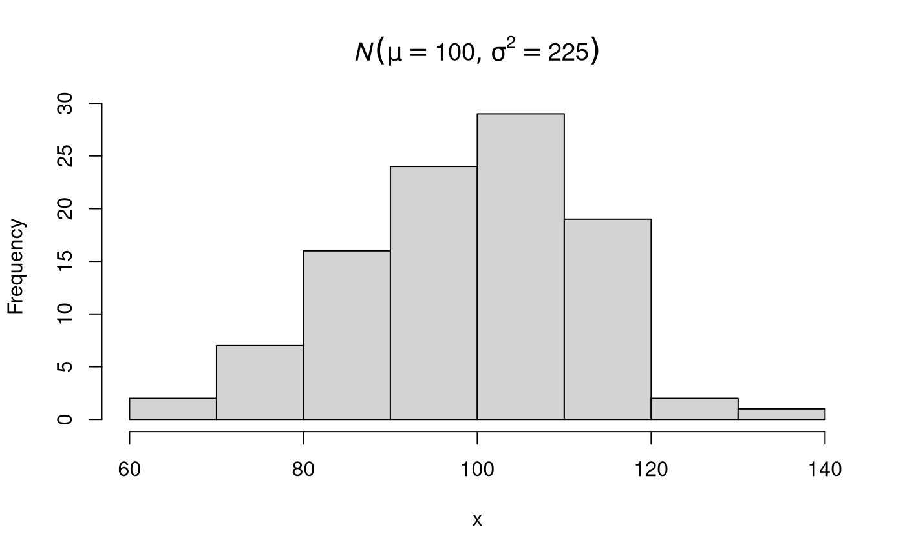
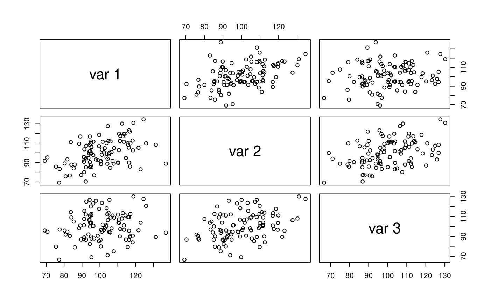
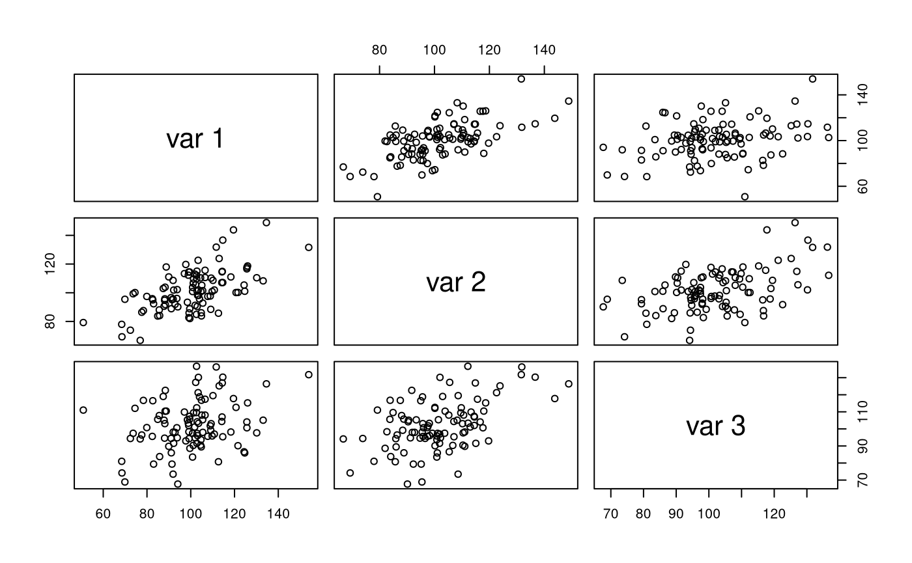

Main functions
library(jeksterslabRdata)
univ()
Generates an \(n \times 1\) univariate data vector or a list of \(n \times 1\) univariate data vectors of length R. The default data generating function is the normal distribution
\[\begin{equation} X \sim \mathcal{N} \left( \mu, \sigma^2 \right) . %(\#eq:dist-X-norm) \end{equation}\]
Single Random Data Set
Run the function.
Explore the output.
str(x, list.len = 6) #> num [1:100] 107.5 105.5 106.8 109.6 89.7 ... hist(x, main = expression(italic(N)(list(mu == 100, sigma^2 == 225))))

Multiple Random Data Sets
Run the function.
Explore the output.
str(xstar, list.len = 6) #> List of 100 #> $ : num [1:100] 79 107.3 100.3 67.3 97.7 ... #> $ : num [1:100] 127.4 111.3 84.8 91.1 76.2 ... #> $ : num [1:100] 106.7 88.4 88.8 107 103.2 ... #> $ : num [1:100] 107.8 100.9 105.1 85 99.6 ... #> $ : num [1:100] 70.9 126 101.5 95.7 107.1 ... #> $ : num [1:100] 97.2 102.8 103.8 79.3 66.1 ... #> [list output truncated]
mvn()
Generates an \(n \times k\) multivariate data matrix or a list of \(n \times k\) multivariate data matrices of length R from the multivariate normal distribution
\[\begin{equation} \mathbf{X} \sim \mathcal{N}_{k} \left( \boldsymbol{\mu}, \boldsymbol{\Sigma} \right) . %(\#eq:dist-X-mvn) \end{equation}\]
This function is a wrapper around MASS::mvrnorm().
Single Random Data Set
Set mu and Sigma.
mu <- c(100, 100, 100) Sigma <- matrix( data = c(225, 112.50, 56.25, 112.5, 225, 112.5, 56.25, 112.50, 225), ncol = 3 )
Run the function.
X <- mvn(n = 100, mu = mu, Sigma = Sigma)
Explore the output.
str(X) #> num [1:100, 1:3] 81.8 95.3 92.1 116.3 94.3 ... #> - attr(*, "dimnames")=List of 2 #> ..$ : NULL #> ..$ : NULL pairs(X)

colMeans(X) #> [1] 101.1295 100.0210 100.2776 cov(X) #> [,1] [,2] [,3] #> [1,] 172.85177 81.80383 25.62522 #> [2,] 81.80383 188.93310 74.22175 #> [3,] 25.62522 74.22175 189.43663 cor(X) #> [,1] [,2] [,3] #> [1,] 1.0000000 0.4526710 0.1416116 #> [2,] 0.4526710 1.0000000 0.3923243 #> [3,] 0.1416116 0.3923243 1.0000000
Multiple Random Data Sets
Run the function.
Xstar <- mvn(n = 100, mu = mu, Sigma = Sigma, R = 100)
Explore the output.
str(Xstar, list.len = 6) #> List of 100 #> $ : num [1:100, 1:3] 116.9 106.8 107.5 68.3 92.3 ... #> ..- attr(*, "dimnames")=List of 2 #> .. ..$ : NULL #> .. ..$ : NULL #> $ : num [1:100, 1:3] 109.7 92.7 107.3 97.4 105.3 ... #> ..- attr(*, "dimnames")=List of 2 #> .. ..$ : NULL #> .. ..$ : NULL #> $ : num [1:100, 1:3] 109.6 91.4 107.8 81.8 108.5 ... #> ..- attr(*, "dimnames")=List of 2 #> .. ..$ : NULL #> .. ..$ : NULL #> $ : num [1:100, 1:3] 100.7 86.2 111.5 81.7 92.1 ... #> ..- attr(*, "dimnames")=List of 2 #> .. ..$ : NULL #> .. ..$ : NULL #> $ : num [1:100, 1:3] 95.4 105.9 99.2 83.6 64.5 ... #> ..- attr(*, "dimnames")=List of 2 #> .. ..$ : NULL #> .. ..$ : NULL #> $ : num [1:100, 1:3] 103 103 109 105 111 ... #> ..- attr(*, "dimnames")=List of 2 #> .. ..$ : NULL #> .. ..$ : NULL #> [list output truncated]
mvnram()
Generates an \(n \times k\) multivariate data matrix or a list of \(n \times k\) multivariate data matrices of length R from the multivariate normal distribution
\[\begin{equation} \mathbf{X} \sim \mathcal{N}_{k} \left( \boldsymbol{\mu}, \boldsymbol{\Sigma} \right) . %(\#eq:dist-X-mvn) \end{equation}\]
The model-implied matrices used to generate data is derived from the Reticular Action Model (RAM) Matrices.
Single Random Data Set
Set matrices.
mu <- c(100, 100, 100) A <- matrix( data = c(0, sqrt(0.26), 0, 0, 0, sqrt(0.26), 0, 0, 0), ncol = 3 ) S <- diag(c(225, 166.5, 116.5)) F <- I <- diag(3)
Run the function.
X <- mvnram(n = 100, mu = mu, A = A, S = S, F = F, I = I)
Explore the output.
str(X) #> num [1:100, 1:3] 104 91.4 99.5 91.1 109.8 ... #> - attr(*, "dimnames")=List of 2 #> ..$ : NULL #> ..$ : NULL pairs(X)

colMeans(X) #> [1] 100.4051 101.6311 102.2443 cov(X) #> [,1] [,2] [,3] #> [1,] 262.14943 145.6847 70.00819 #> [2,] 145.68471 212.7575 102.22099 #> [3,] 70.00819 102.2210 206.84806 cor(X) #> [,1] [,2] [,3] #> [1,] 1.0000000 0.6168749 0.3006413 #> [2,] 0.6168749 1.0000000 0.4872725 #> [3,] 0.3006413 0.4872725 1.0000000
Multiple Random Data Sets
Run the function.
Xstar <- mvnram(n = 100, mu = mu, A = A, S = S, F = F, I = I, R = 100)
Explore the output.
str(Xstar, list.len = 6) #> List of 100 #> $ : num [1:100, 1:3] 101.1 76.6 85.2 108.8 82.2 ... #> ..- attr(*, "dimnames")=List of 2 #> .. ..$ : NULL #> .. ..$ : NULL #> $ : num [1:100, 1:3] 104.3 125.9 94.8 70.4 110.7 ... #> ..- attr(*, "dimnames")=List of 2 #> .. ..$ : NULL #> .. ..$ : NULL #> $ : num [1:100, 1:3] 119.8 79.2 69.4 94.1 125.8 ... #> ..- attr(*, "dimnames")=List of 2 #> .. ..$ : NULL #> .. ..$ : NULL #> $ : num [1:100, 1:3] 117.4 115.4 96.9 106.3 61.2 ... #> ..- attr(*, "dimnames")=List of 2 #> .. ..$ : NULL #> .. ..$ : NULL #> $ : num [1:100, 1:3] 110.3 112.5 104 106 73.5 ... #> ..- attr(*, "dimnames")=List of 2 #> .. ..$ : NULL #> .. ..$ : NULL #> $ : num [1:100, 1:3] 80.6 95.6 114.6 116.9 81.8 ... #> ..- attr(*, "dimnames")=List of 2 #> .. ..$ : NULL #> .. ..$ : NULL #> [list output truncated]